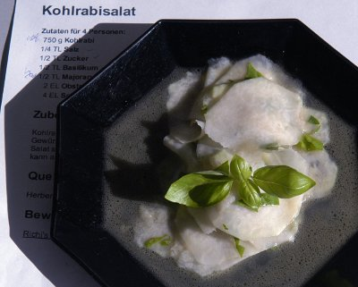

| Zutaten für 4 Personen: | |
| 750 g | Kohlrabi |
| 1/4 TL | Salz |
| 1/2 TL | Zucker |
| 1/2 TL | Basilikum |
| 1/2 TL | Majoran |
| 2 EL | Obstessig |
| 4 EL | Sonnenblumenöl |
Gewürze mit dem Essig verrühren. Öl dazu mischen.
Kohlrabi waschen, schälen und in sehr feine Scheibchen schneiden oder hobeln.
Sauce über die Kohlrabi giessen. Salat sofort servieren (sonst ziehen die Kohlrabi Wasser und werden ledrig).
Dieser Salat kann auch auf Brötchen angerichtet werden.
Herbert Eigenmann, Code: KOS
Ist mal was anderes als Gurkensalat. Sehr einfach zubereitet doch knackig. Man könnte daraus ein Kohlrabi Carpaccio machen wenn man die Scheiben schön anordnet und dann mit der Sauce beträufelt. RE 11.7.2009
@LINKBACK_TAG@ @WAKELOCK@